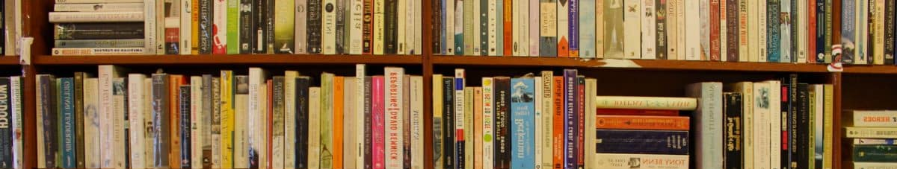
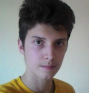

<!DOCTYPE html><html><head><meta name="viewport" content="width=device-width, initial-scale=1"><title>doučovanie</title><link rel="stylesheet" href="public/stylesheets/bootstrap.min.css"><link rel="stylesheet" href="public/stylesheets/all.css"><link href="https://fonts.googleapis.com/css2?family=Montserrat:ital,wght@0,500;0,700;1,600&amp;display=swap" rel="stylesheet"><link rel="stylesheet" href="public/stylesheets/custom.css"></head><body></body></html><body id="body"><span id="top" style="margin-top:-99999px; position: absolute"></span><div class="row fixed-top"><div class="col-md-8 backgroundcover"></div></div><div id="largenavrow" class="row fixed-top"><nav id="custom-navbar" class="navbar navbar-expand-md navbar-light col-md-8"><ul class="navbar-nav">   <li class="nav-item"><a href="#top" class="nav-link"> <i class="fa fa-home">   predmety</i></a></li><li class="nav-item"><a href="#opt" class="nav-link">spôsoby doučovania</a></li><li class="nav-item"><a href="#ppl" class="nav-link">doučovatelia </a></li><li class="nav-item"><a href="#con" class="nav-link">kontakt</a></li></ul></nav></div><div class="row"><div id="maindiv" class="col-xs-12 col-md-8 ml-auto mr-auto"><div class="row specialcontent"><div id="homepagetext" class="col-md-8"><p>Od septembra 2020 ponúkame, so spoluprácou škoského kabinetu, všetkým žiakom spojenej školy sv. Vincenta
de Paul doučovanie zadarmo. Pre žiakov iných škôl je vždy možná dohoda cez mail alebo telefón.
Nemusíš sa báť, každému radi pomôžeme a snažíme sa udržať pohodovú atmosféru. </p><p>Kvôli pandémií Covidu-19 preferujeme kvôli našej aj vašej bezpečnosti doučovať cez internet.</p></div><div id="homepageicon" class="col-md-4 center-text"><i class="fa fa-clipboard-check"></i></div></div><div id="subjectcontainer" class="specialcontent"><div class="row center-text"><p class="mr-auto ml-auto">momentálna ponuka predmetov</p></div><a href="#ppl" style="text-decoration:none; color: rgb(30,30,30)"><div style="height:80px" class="row"><div class="col-md-2 col-4"><i class="fas fa-laptop subjecticons"></i><p>INF</p></div><div class="col-md-2 col-4"><i class="fas fa-atom subjecticons"></i><p>FYZ</p></div><div class="col-md-2 col-4"><i class="fas fa-frog subjecticons"></i><p>BIO</p></div><div class="col-md-2 col-4"><i class="fas fa-flask subjecticons"></i><p>CHEM</p></div><div class="col-md-2 col-4"><i class="fas fa-pound-sign subjecticons"></i><p>ANG</p></div><div class="col-md-2 col-4"><i class="fas fa-square-root-alt subjecticons"></i><p>MAT</p></div></div></a></div><div id="opt" style="position:absolute; margin-top: 965px" class="span">     </div><div class="nextpage specialcontent"><div style="height: 60px; padding-top: 13px" class="row"><p style="font-family: 'Montserrat' !important" class="ml-auto mr-auto">spôsoby doučovania</p></div><div style="font-family: 'Montserrat' !important" class="row w-100 ml-auto mr-auto"><div style="background-color:#7289DA" class="col-4 locationcontainer"><div style="background-color:#5E77D4" class="overlay"><div class="text"><p>Discord je ideálny nástroj na elearning. Je zdarma, funguje crossplatformovo a nepotrebuje inštaláciu. Aby si sa pridal na náš server, stačí :</p><p class="mb-0">krok 1 : otvoriť link, ktorý ťa pošle na úvodnú stránku našeho komunitného serveru </p><a href="https://discord.gg/ykc3Yuq">https://discord.gg/ykc3Yuq</a><p style="margin-top:5% !important">krok 2 : Napísať meno, pod ktorým ťa na ńom uvidíme. 
Ak chceš byť anonymný, môžeš použiť prezývku. Meno sa dá zmeniť.</p></div></div></div><div style="background-color:#BADBF5" class="col-4 locationcontainer"><div style="background-color:#82BFED" class="overlay"><div class="text"><p>Vdaka spolupráci s kabinetom doučujeme aj v priestoroch školy sv. Vincenta de Paul. Miestnosť väčšinou
nie je pevne daná, je preto najlepšie dopredu sa dohodnúť cez telefón/mail alebo napísať na discord.</p></div></div></div><div style="background-color:#EF233C" class="col-4 locationcontainer"><div style="background-color:#D80032" class="overlay"><div class="text"><p>V prípade záujmu vieme dôjsť v rámci Ružinova a okolia. Kvôli koronakríze odporúčame radšej online alternatívu.</p></div></div></div></div></div><div id="ppl" style="position:absolute; margin-top: 960px" class="span">     </div><div class="nextpage specialcontent"><div style="height: 60px; padding-top: 13px" class="row"><p style="font-family: 'Montserrat'" class="ml-auto mr-auto">doučovatelia</p></div><div class="row w-100 ml-auto mr-auto"><div class="col-4 douccontainer"><div class="container"><ul style="padding-left:0">Filip Jediný<li>Kofeínový adikt</li><li>Dlhoročný doučovatel</li></ul></div></div><div class="col-4 douccontainer"><div class="container"><ul style="padding-left:0">Adam Fojtík<li>Profesionálny crackhead</li><li>Budúci študent medicíny</li></ul></div></div><div class="col-4 douccontainer"><div class="container"><ul style="padding-left:0">...<li>Hladáme doučovatelov na jazyky, ktorí zvládnu fungovať cez discord</li></ul></div></div></div></div><div class="nextpage specialcontent footer"><div style="height: 60px; padding-top: 13px" class="row"><p style="font-family: 'Montserrat'" class="ml-auto mr-auto">kontakt</p></div><div class="row"><i class="fas fa-mobile subjecticons ml-auto mr-auto"><span class="contacttext">+421 917 591 398</span></i></div><div style="margin-bottom:3%; margin-top:3%" class="row"><i class="fas fa-envelope subjecticons ml-auto mr-auto"><span class="contacttext">vincovastudovna@gmail.com</span></i></div><div class="row"><p id="con" style="padding-top:15px; font-size:80%" class="ml-auto mr-auto"> Copyright &copy 2020 Filip Jediný. All rights reserved</p></div></div></div></div></body>
